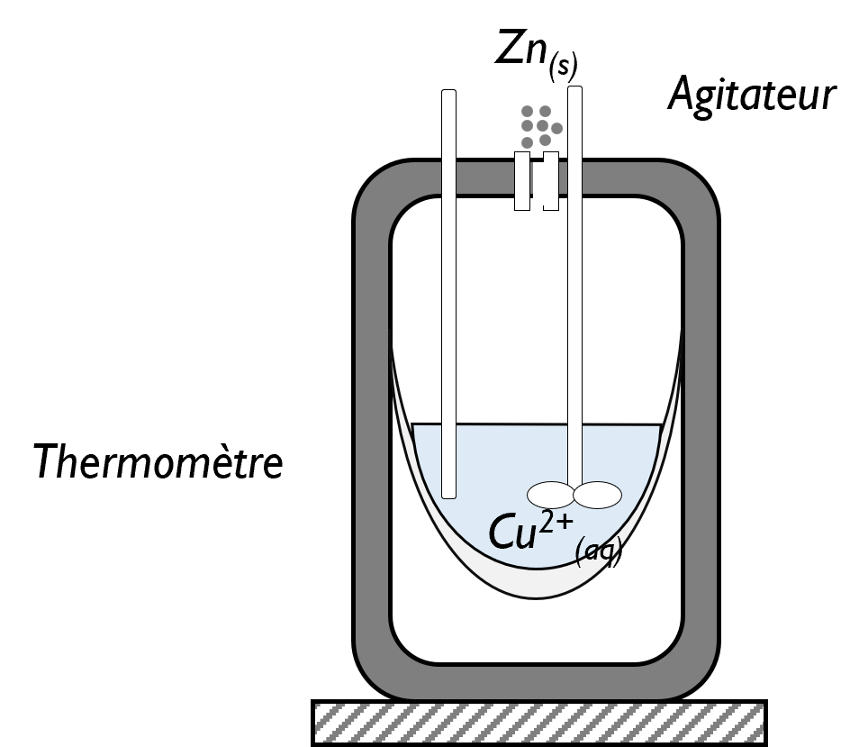

MODULE 6 / 6
Calorimetry
Determine a reaction heat experimentally using a heat balance.
Definition and description of the calorimeter
Calorimeter
Thermally insulated apparatus used to determine reaction enthalpies in aqueous solution. The processes studied take place at constant pressure.
The Dewar vessel limits heat exchange with the surroundings. A thermometer measures temperature changes; a stirrer makes the solution uniform. The silvered double wall limits radiation losses, and the vacuum between the walls limits conduction losses.
This describes the constant-pressure calorimeter studied here. The bomb calorimeter introduced later operates at constant volume.
In this model, the calorimetric assembly is adiabatic. Its constituents can exchange heat with one another.
Establishing the heat balance
Draw the boundary before writing the balance
The reacting contents can exchange heat with the vessel, thermometer and other included components. Yet thecontents + calorimeter assembly can be treated as adiabatic with respect to the surroundings. An internal transfer does not cross its outer boundary.
In the progressive diagram and balance, first identify what belongs to the system, then each contribution. An exothermic reaction can heat the contents and calorimeter without external heat input.
Account for all physicochemical processes inside the calorimeter. At constant pressure, the exchanged heats are related to enthalpy changes.
| Contribution | Heat |
|---|---|
| Calorimeter | Ccalo ΔT |
| Temperature change of a constituent | nᵢ Cp,m,i ΔT or mᵢ cp,i ΔT |
| Phase transition | nᵢ Δphase transitionH° |
| Reaction | ξ ΔrH° |
For each contribution, write ΔT = Tf − Tinitial. The given heat capacity may be molar, specific or that of the whole calorimeter: its units indicate how to use it.
Checking whether all the ice can melt
Consider water and a calorimeter initially at Tᵢ > 0 °C, then ice at 0 °C. Before seeking a positive final temperature, compare the heat that the water and vessel can release by cooling to 0 °C with the heat required to melt all the ice.
Qcomplete melting = niceΔfusH = miceLfus
Lfus = ΔfusH/M is the melting heat per unit mass. Use consistent units, for example J·g⁻¹ and g.
| Comparison | Final state |
|---|---|
| Qavailable < Qcomplete melting | Tf = 0 °C; ice and water coexist. Melted mass = Qavailable/Lfus ; remaining mass = initial ice mass − melted mass. |
| Equality | All ice has just melted; Tf = 0 °C. |
| Qavailable > Qcomplete melting | All ice melts, then the resulting water warms up: Tf > 0 °C, provided no other phase transition occurs. |
In this last case, for the water/ice mixture:
+ miceLfus + micecwater(Tf − 0) = 0
If the ice starts below 0 °C, first add its heating to 0 °C to the balance. Never assume complete melting and then accept a negative final temperature: this indicates that the complete-melting assumption is invalid.
Determining the calorimeter heat capacity
Two methods are possible: dissolve a salt with known dissolution enthalpy, or mix cold and hot water.
For mixing, the calorimeter and cold water start at T₁; the hot water starts at T₂:
Building the balance for mixing water
build the balance step by step to understand each contribution.
A calorimeter contains m₁ = 250 g of water at T₁ = 18 °C. Add m₂ = 250 g of water at T₂ = 40 °C. The final temperature is Tf = 28.22 °C.
Determine the calorimeter heat capacity. Given: cwater = 4.18 J·g⁻¹·K⁻¹.
Determining a reaction heat
Once the calorimeter heat capacity is known, write the balance by adding the reaction contribution to the temperature-change and any phase-transition contributions.
In the Zn/Cu²⁺ exercise, calculate the three thermal contributions in the balance, then determine the enthalpy change released by the reaction.

Once Qreaction is obtained, ΔrH ≈ Qreaction/ξ. For solutions, initial amounts follow n = cV; reaction coefficients identify the limiting reactant. Each solution and the calorimeter retain their own initial temperature in heating terms.
For dissolving an amount n of substance, ΔdissolH ≈ Qdissolution/n. If the contents cool, their heating contribution is negative: dissolution receives positive heat in this adiabatic balance.
Building a balance with a reaction
build the balance step by step to understand each contribution.
A calorimeter of heat capacity 160 J·K⁻¹ receives 150 mL of copper(II) sulfate solution at 18 °C, then 3 g of zinc at 20 °C. The final temperature is 28 °C.
Calculate the enthalpy change associated with Zn(s) + Cu²⁺(aq) → Zn²⁺(aq) + Cu(s).
Data: cwater = 4.18 J·g⁻¹·K⁻¹ ; cZn = 0.380 J·g⁻¹·K⁻¹. For this calculation, treat 150 mL of solution as 150 g of water.
Data: references and notes (water) · references and notes (zinc)
Heat measured at constant volume
| Apparatus | Imposed quantity | Relationship for the closed system |
|---|---|---|
| Calorimeter at imposed pressure | Constant external pressure | Qp = ΔH, with pressure–volume work only and initial and final mechanical equilibrium |
| Rigid bomb calorimeter | Constant volume | QV = ΔU in the absence of other work |
Temperature can change in both setups. Constant pressure and constant volume do not imply constant temperature. In a bomb, ignition energy and any other inputs must be included or corrected for.
In a bomb calorimeter, the reaction vessel is rigid: V is constant and pressure–volume work is zero. Considering only this work, the first law gives:
ΔrU ≈ QV, reaction/ξ
Energy “released” by the reaction is negative from the reacting system's perspective. At constant volume, the measured heat gives ΔU, not directly ΔH.
From measurement to ΔrH°
A bomb calorimeter measures heat at constant volume, initially giving the internal energy of reaction. To obtain the reaction enthalpy, use:
This expression assumes ideal gases and negligible pV contributions from condensed phases. Δνg is the sum of gaseous product coefficients minus gaseous reactant coefficients for the same balanced equation. Both quantities refer to the same temperature T in kelvins, using units consistent with R.
With R = 8.314 J·mol⁻¹·K⁻¹, the term ΔνgRT is in J·mol⁻¹. Convert to kJ·mol⁻¹ if necessary. “Standard” refers to constituent states; it does not follow merely from working at constant volume.
Thermochemistry · Lénaïc Lartigue · Calorimetry · CC BY-NC-ND 4.0
6 concept questions
These questions cover definitions and relationships. You may try again.
Exercises
After the quiz, develop your reasoning on paper, then enter the requested results. The calculation steps are provided in the detailed solution, available after an attempt.
Your answers are stored in this browser. This record supports your practice; it is not a grade.
EXERCISE 1
Determining the calorimeter heat capacity
A calorimeter contains m₁ = 250 g of water at T₁ = 18 °C. Add m₂ = 250 g of water at T₂ = 40 °C. The final temperature is Tf = 28.22 °C.
Determine the calorimeter heat capacity. Given: cwater = 4.18 J·g⁻¹·K⁻¹.
Data: references and notes (water)
Hint 1
Water 1 and the vessel warm up; water 2 cools down.
Hint 2
Rearrange to Ccal = −[m₁c(Tf−T₁) + m₂c(Tf−T₂)]/(Tf−T₁).
Detailed solution
1. System and balance. Consider the calorimeter + two water samples, adiabatic at constant pressure. The sum of contributions is zero: Ccal(Tf−T₁) + m₁c(Tf−T₁) + m₂c(Tf−T₂) = 0.
2. Exchanges. Cold water receives Q₁ = 250 × 4.18 × (28.22−18) = 10 679.9 J. Hot water releases Q₂ = 250 × 4.18 × (28.22−40) = −12 310.1 J.
3. Unknown quantity. The calorimeter receives −(Q₁+Q₂) = 1 630.2 J. Thus Ccal = 1 630.2/(28.22−18) = 159.51 J·K⁻¹. The heat capacity is positive; the calorimeter has warmed up.
EXERCISE 2
Reaction between Zn and Cu²⁺
A calorimeter of heat capacity 160 J·K⁻¹ receives 150 mL of copper(II) sulfate solution at 18 °C, then 3 g of zinc at 20 °C. The final temperature is 28 °C.
Calculate the enthalpy change associated with Zn(s) + Cu²⁺(aq) → Zn²⁺(aq) + Cu(s).
Data: cwater = 4.18 J·g⁻¹·K⁻¹ ; cZn = 0.380 J·g⁻¹·K⁻¹. For this calculation, treat 150 mL of solution as 150 g of water.
Data: references and notes (water) · references and notes (zinc)
Hint 1
Calculate each thermal contribution using its own initial temperature.
Hint 2
The sum of the reaction contribution and three heating contributions is zero.
Detailed solution
1. Build the balance. The calorimeter + contents assembly is adiabatic at constant pressure. Along the calculation path, heat the reactants to 28 °C, then consider the reaction at that temperature: ΔHreaction + Qcal + Qsolution + QZn = 0.
2. Calculate the heating contributions. Qcal = 160 × (28−18) = 1 600 J; Qsolution = 150 × 4.18 × (28−18) = 6 270 J; QZn = 3 × 0.380 × (28−20) = 9.12 J. Zinc starts at 20 °C, not 18 °C. Each contribution is positive.
3. Isolate the reaction heat. ΔHreaction = −(1 600 + 6 270 + 9.12) = −7 879.12 J = −7.87912 kJ, approximately −7.9 kJ. The reaction is exothermic. This is the enthalpy for the amount reacting, not a molar value.
EXERCISE 3
Does all the ice melt?
In an adiabatic calorimeter, the water and vessel can release 1 000 J by cooling to 0 °C. The ice initially at 0 °C would require 2 000 J to melt completely. Use Lfus = 334 J·g⁻¹.
Data: references and notes (water)
Determine the final temperature and mass of ice melted.
Hint 1
The available heat cannot melt all the ice.
Detailed solution
1. Compare the energies. The available 1 000 J is less than the 2 000 J required to melt all the ice: melting is partial.
2. Final temperature. Ice remains in equilibrium with liquid water: in this model, Tf = 0 °C.
3. Melted mass. Q = mmelted Lfus, so mmelted = Q/Lfus = 1 000/334 = 2.994 g, approximately 2.99 g. The available energy is used for melting, without heating above 0 °C.
Discussion · Calorimetry
Ask your question and describe the reasoning you find difficult. Discussions are public.
You may also ask questions by email or during an online class.